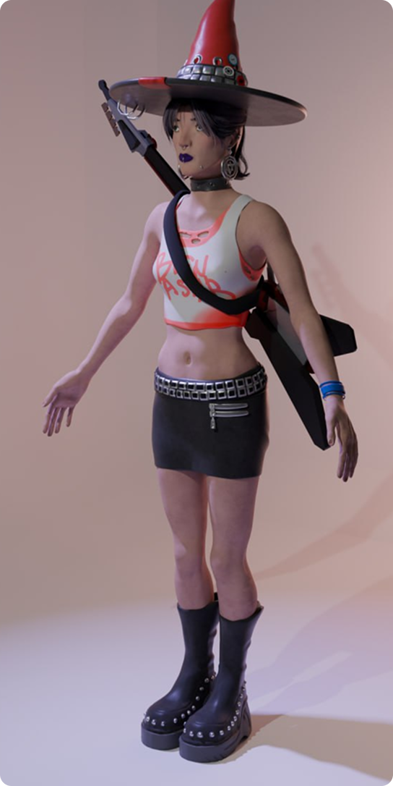
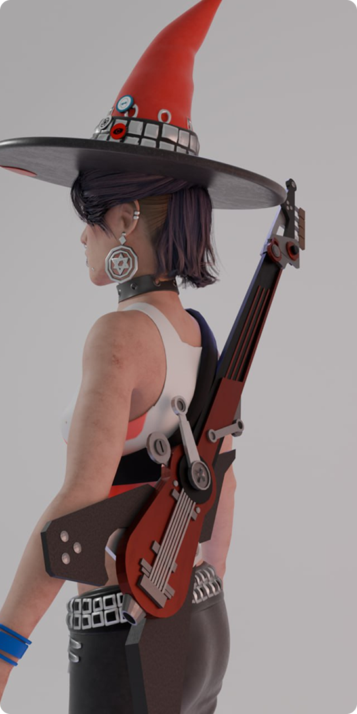
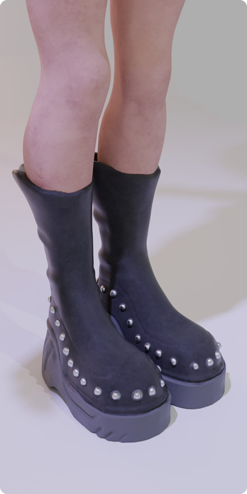
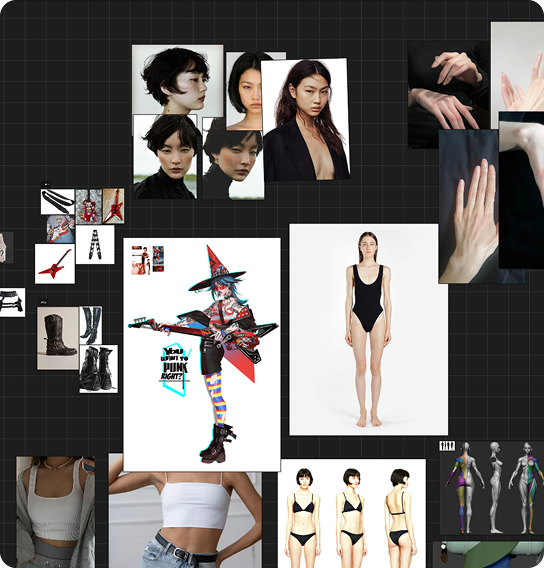
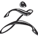

Девочка - Панк



Начало работы над этим проектом началось с подбора концепт-арта, который задал общее визуальное направление и атмосферу будущей работы. На этом этапе важно было определить стилистику, настроение и ключевые особенности объекта.
Далее последовал более детальный подбор референсов для каждой отдельной части. Это позволило глубже проработать форму, пропорции и функциональные элементы, а также избежать неточностей в дальнейшем процессе создания.
Особое внимание уделялось внешнему виду тела: были рассмотрены различные варианты его формы, структуры и деталей, после чего выбран наиболее подходящий с точки зрения задумки и реалистичности.
Параллельно с этим определялись материалы, которые будут использоваться в дальнейшем. Подбор материалов играл важную роль, так как от него зависели не только визуальные характеристики (такие как текстура, отражение и цвет), но и общее восприятие объекта.

После выбора концептуальной части началась работа над моделью. Сначала был выполнен блокинг тела с базовыми пропорциями и силуэтом, затем форма была доработана и уточнена.
Следующим этапом стало детализирование модели и подбор материалов на основе референсов. После этого модель была экспортирована в другое программное обеспечение.
На финальном этапе была собрана сцена: размещен объект и настроено освещение.
Программы:
